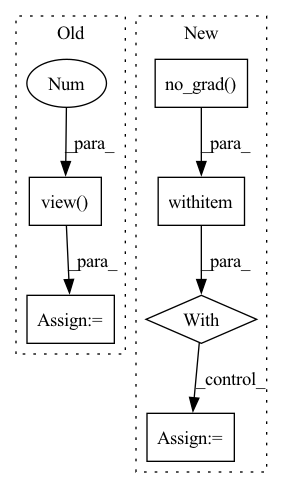

Pattern ID :13236
Before Change
out = self.trans3(self.dense3(out))
out = self.dense4(out)
out = F.avg_pool2d(F.relu(self.bn(out)), 4)
e = out.view( out.size(0), -1 )
out = self.linear(w)
if last:
return out, e
else:After Change
def forward(self, x, last=False, freeze=False):
if freeze:
with torch.no_grad() :
features = self.features(x)
out = F.relu(features, inplace=True)
e = F.adaptive_avg_pool2d(out, (1, 1)).view(features.size(0), -1)
else:
features = self.features(x)
out = F.relu(features, inplace=True)In pattern: SUPERPATTERN
Frequency: 3
Non-data size: 6
Instances Fragment ID: 44642522
Project Name: decile-team/distil
Commit Name: 4108c7fe8b81f9f198410bb6b2598f6833329a5e
Time: 2021-04-29
Author: you@example.com
File Name: distil/utils/models/densenet.py
M Class Name: DenseNet
N Class Name: DenseNet
M Method Name: forward(4)
N Method Name: forward(3)
M Parent Class: nn.Module
N Parent Class: nn.Module
M File Name: distil/utils/models/densenet.py
N File Name: distil/utils/models/densenet.py
M Start Line: 76
M End Line: 83
N Start Line: 121
N End Line: 131
Before Change
logits_gen = outputs_gen.logits // (batch_size, seq_length, config.vocab_size)
masked_bool = (labels == -100)
// logits_masked: (batch_size*masked_length, config.vocab_size)
logits_masked = F.softmax(logits_gen[masked_bool].view(-1 , self.discriminator.electra.config.vocab_size) , dim=1)
// replaced tokens are set with logits
tokens_replaced = logits_masked.multinomial(num_samples=1, replacement=True).view(-1)
input_ids_disc = labels.clone()
input_ids_disc[masked_bool] = tokens_replaced
labels_disc = (input_ids_disc != labels).to(torch.long)After Change
loss_gen = outputs_gen.loss // (1,)
logits_gen = outputs_gen.logits // (batch_size, seq_length, config.vocab_size)
with torch.no_grad() :
masked_bool = (labels == -100)
// logits_masked: (batch_size*masked_length, config.vocab_size)
// logits_masked = F.softmax(logits_gen[masked_bool].reshape(-1, self.discriminator.electra.config.vocab_size), dim=1)
// replaced tokens are set with logits
// tokens_replaced = logits_masked.multinomial(num_samples=1, replacement=True).reshape(-1)
logits = logits_gen[masked_bool]//.reshape(-1, self.discriminator.electra.config.vocab_size)
gumbel = self.gumbel_dist.sample(logits.shape)//.to(logits.device)
tokens_replaced = (logits + gumbel).argmax(dim=-1)
input_ids_disc = labels.clone()
input_ids_disc[masked_bool] = tokens_replaced
labels_disc = (input_ids_disc != labels)//.to(torch.long) Fragment ID: 44642525
Project Name: retarfi/language-pretraining
Commit Name: ea8063480044fc1c8e844831355b7feb7edee091
Time: 2021-07-15
Author: valerososoccer@gmail.com
File Name: utils/model.py
M Class Name: ElectraForPretrainingModel
N Class Name: ElectraForPretrainingModel
M Method Name: forward(11)
N Method Name: forward(11)
M Parent Class: PreTrainedModel
N Parent Class: PreTrainedModel
M File Name: utils/model.py
N File Name: utils/model.py
M Start Line: 60
M End Line: 68
N Start Line: 69
N End Line: 83
Before Change
with torch.no_grad():
means, buckets, dists = kmeans(x, means, training=self.training, init=not self.initted)
indices = distribution(dists, window_size)
indices = indices.contiguous().view( *indices.size()[:2], -1 )
routed_means = batched_index_select(expand_dim(means, 0, b), buckets)
loss = F.mse_loss(x, routed_means) * self.commitment
After Change
dists, buckets = dists_and_buckets(x, means)
if update_means:
with torch.no_grad() :
means = kmeans_iter(x, means, buckets)
self.new_means = means
routed_means = batched_index_select(expand_dim(means, 0, b), buckets) Fragment ID: 44642527
Project Name: lucidrains/routing-transformer
Commit Name: 2042adb06111339b86814500f0c389759b8f6cdf
Time: 2020-05-27
Author: lucidrains@gmail.com
File Name: routing_transformer/routing_transformer.py
M Class Name: Kmeans
N Class Name: Kmeans
M Method Name: forward(3)
N Method Name: forward(3)
M Parent Class: nn.Module
N Parent Class: nn.Module
M File Name: routing_transformer/routing_transformer.py
N File Name: routing_transformer/routing_transformer.py
M Start Line: 396
M End Line: 410
N Start Line: 367
N End Line: 384